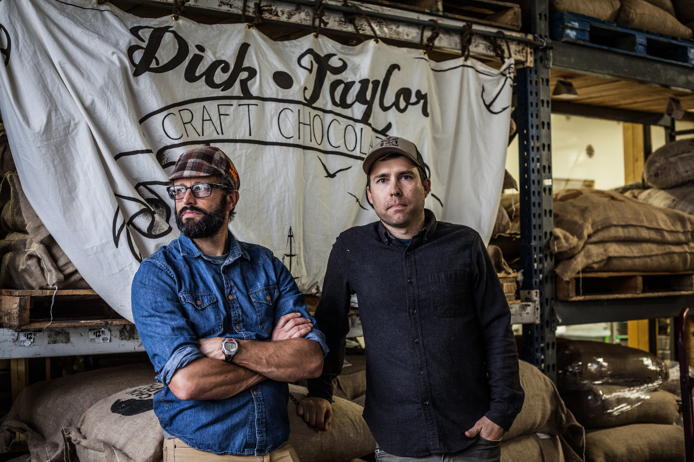
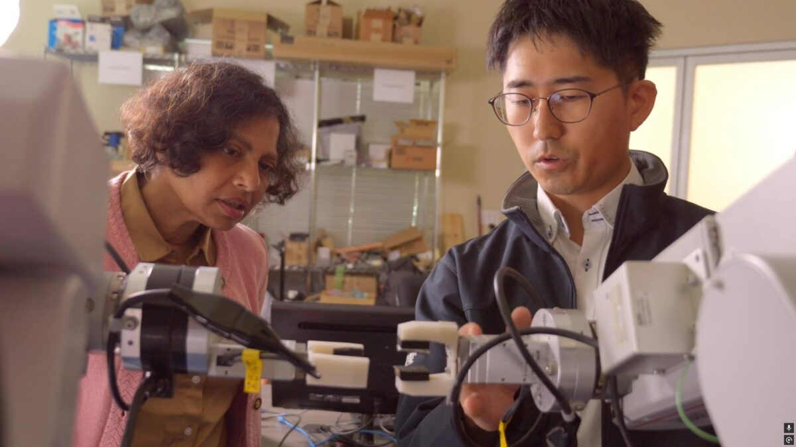
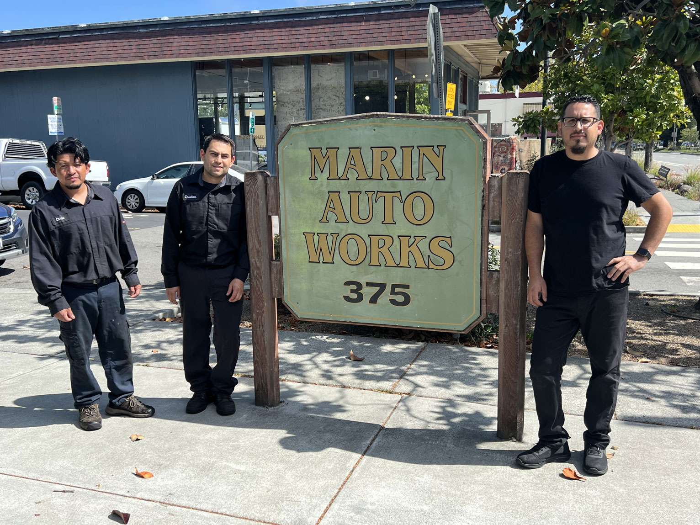
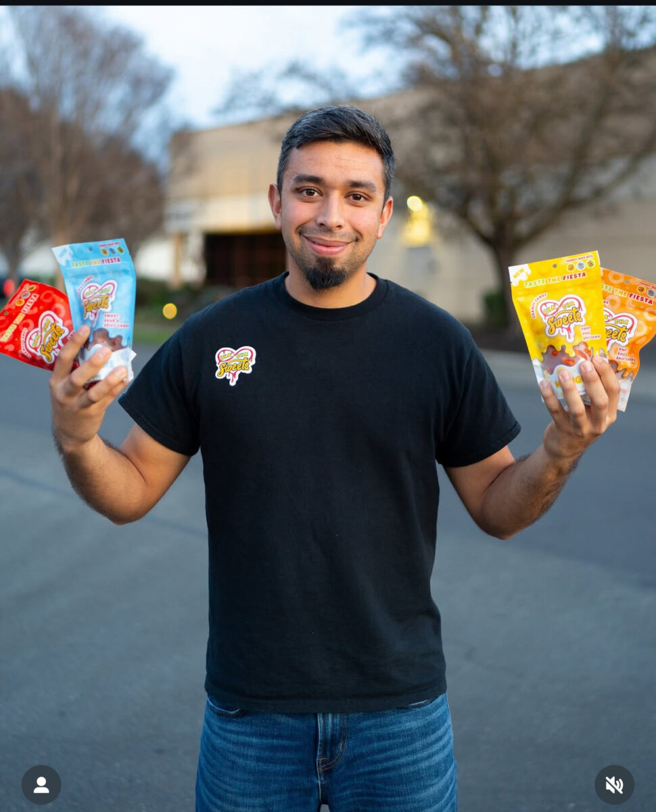

Photos.
Photography and video that put people first. Faces, not buildings. Real work, real moments, real light.
People, not programs.
A person’s face communicates the spirit of the network better than any logo, office exterior, or statistic. Show connection between people and energy in the work.

A working archive.
Organize assets by what the network needs to publish: client images and event video. Make the useful image easy to find.

Client image
Client image
Client imageWhat we show.
The decisions that keep the page from looking like stock business software. Real people, real rooms, real stakes.
- People at work
- Natural light
- Advisor + client
- Tight crops
- Confidence, focus, laughter
- Suits shaking hands
- Posed group shots
- AI-generated people
- Empty office space
- Heavy brand-color filters
Every face, a headshot.
Every advisor and staff member should have a current professional headshot. It shows up on LinkedIn, in client introductions, and on social — the first face someone sees before they meet you.


HOW TO HEADSHOT
Shot with intent. Intended for LinkedIn, pitch decks, and press. Not a cropped selfie, not a conference badge photo.
Eyes to the camera. Looking directly into the lens. No glance-offs, no candid angles.
Business casual. Solid colors. A blazer or a collared shirt. Nothing loud, nothing branded.
A clean background. Plain wall, seamless paper, or one flat color. Remove clutter before you shoot.
Soft, even light. Window light works. Overhead fluorescents don’t. Get the light on the face, not the ceiling.
Framed for a square. Bust to lower shoulder, with room around the head. Deliver a 1:1 file — LinkedIn, Slack, and the site grid won’t re-crop.
Already have a photo? Use an AI background-removal tool to lift yourself out of a busy background and drop in a flat color. Nano Banana (inside Google Gemini) and remove.bg both do this in under a minute.
The asset library.
Client images and event video. Centralized, rights-cleared, and ready for the network to use.
WHY · PHOTOGRAPHY RULES
Crop close. Make the person or the work unmistakable. Avoid empty office space and vague background texture.
Keep light real. Natural light is preferred. Don’t push every image into a heavy brand-color filter — it homogenizes the network and erases the room.
Use quiet zones. If type sits on an image, place it over calm space. Never cover the face, hands, product, or action.
Caption lightly. Short labels for names, places, or formats. The image carries the first read; the caption confirms.
Rights and consent. Get a signed release before shooting. Network use only — never sublicense to third parties.
File handling. Original RAW + a 2400px web export to the shared library. JPG quality 85+. Filename convention: client-name_year_format.
Caption standard. First name + last initial, business name, location, date. Never publish a client image without naming the client.